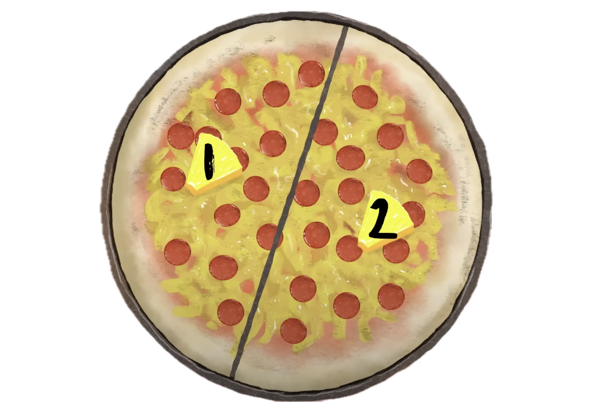
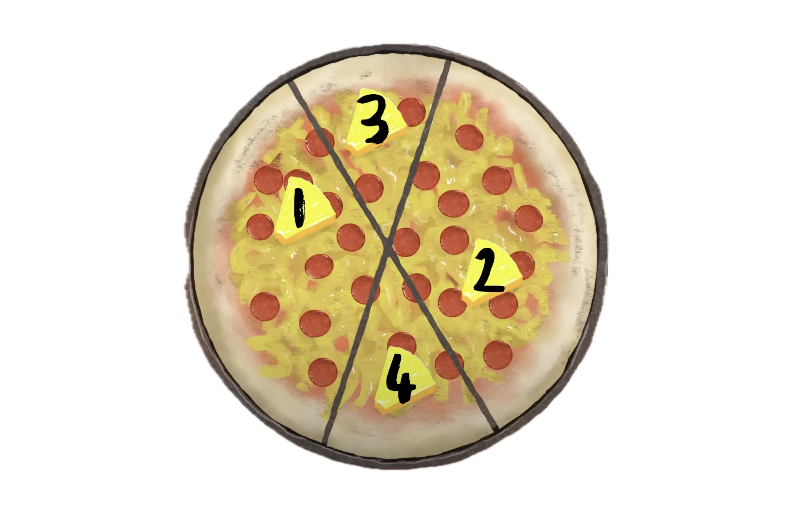
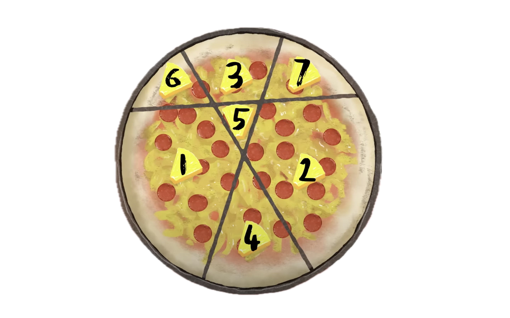
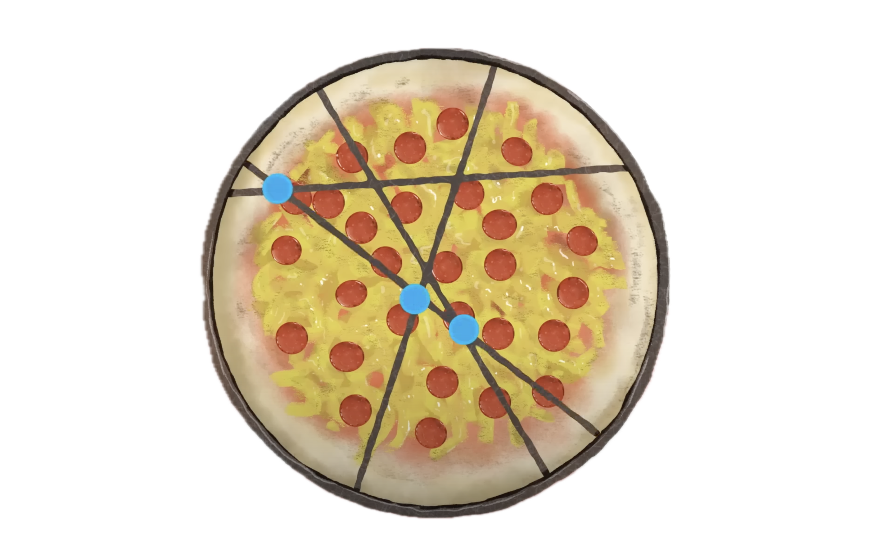

layout: true background-color: grey background-image: url(slajd2.jpg) background-size: cover background-repeat: no-repeat --- class: center, middle # Največje možno število kosov pice pri danem številu rezov Razlago si lahko ogledate na [YouTube posnetku s kanala Numberphile](https://www.youtube.com/watch?v=Xd9UZSodeN8). --- # Matematično vprašanje Dano je število rezov, s katerimi bomo razrezali pico. - vsak rez, ki ga naredimo, mora biti raven - kosi pice so lahko različno veliki ***Na največ koliko kosov lahko razrežemo pico?*** <div class="center"> <img src="vprasanje.png" width="100"> </div> --- ## Primer štirih rezov Za primer si oglejmo 4 reze. Najprej na običajen način razpolovimo pico. <div class="center">  </div> --- ## Primer štirih rezov Sedaj naredimo 2. rez (ponovno na običajen način). <div class="center">  </div> Dobimo 4 kose. --- ## Primer štirih rezov Če 3. rez potegnemo malo višje kot čez sredino, dobimo en kos več kot sicer. <div class="center">  </div> Sedaj imamo 7 kosov. --- ## Primer štirih rezov Premislimo, kako dobimo največ novih kosov pice. Novi rez mora sekati vse prejšnje reze. Torej želimo dobiti največje možno število presečišč. <div class="center">  </div> Na ta način dobimo 4 nove kose. Torej imamo 11 kosov. ??? - poudari, da novi rez ne sme "vijugati" --- class: left, middle *Poskusimo izpeljati formulo.* Z $n$ označimo število rezov, s $f(n)$ pa število kosov oz. območij. Vemo: .center-table[ | Število rezov ($n$) | Največje število kosov ($f(n)$)| |:---------------------------:|:------------------------------:| | 0 | 1 | | 1 | 2 | | 2 | 4 | | 3 | 7 | | 4 | 11 | ] --- count: false class: left, middle *Poskusimo izpeljati formulo.* Z $n$ označimo število rezov, s $f(n)$ pa število kosov oz. območij. Vemo: .center-table[ | Število rezov ($n$) | Največje število kosov ($f(n)$)| |:---------------------------:|:------------------------------:| | 0 | 1 | | 1 | 2 | | 2 | 4 | | 3 | 7 | | 4 | 11 | ] Ko naredimo n-ti rez, lahko sekamo največ $n-1$ prejšnjih rezov. S tem dobimo $n$ novih kosov. --- count: false class: left, middle *Poskusimo izpeljati formulo.* Z $n$ označimo število rezov, s $f(n)$ pa število kosov oz. območij. Vemo: .center-table[ | Število rezov ($n$) | Največje število kosov ($f(n)$)| |:---------------------------:|:------------------------------:| | 0 | 1 | | 1 | 2 | | 2 | 4 | | 3 | 7 | | 4 | 11 | ] Ko naredimo n-ti rez, lahko sekamo največ $n-1$ prejšnjih rezov. S tem dobimo $n$ novih kosov. $$ f(n) = f(n-1) + n $$ --- count: false class: left, middle *Poskusimo izpeljati formulo.* Z $n$ označimo število rezov, s $f(n)$ pa število kosov oz. območij. Vemo: .center-table[ | Število rezov ($n$) | Največje število kosov ($f(n)$)| |:---------------------------:|:------------------------------:| | 0 | 1 | | 1 | 2 | | 2 | 4 | | 3 | 7 | | 4 | 11 | ] Ko naredimo n-ti rez, lahko sekamo največ $n-1$ prejšnjih rezov. S tem dobimo $n$ novih kosov. $$ f(n) = f(n-1) + n $$ Sledi $$ f(n) = f(0) + 1 + 2 + 3 + \dots + n $$ --- class: left, middle # Formula Formula za izračun **največjega možnega števila kosov pice pri danem številu rezov** se glasi: $$ f(n) = \frac{n \cdot (n + 1)}{2} + 1 $$